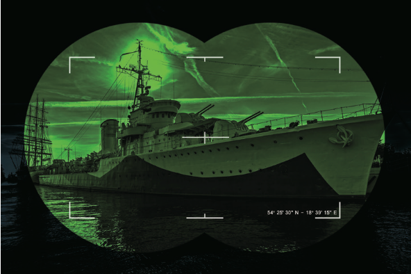
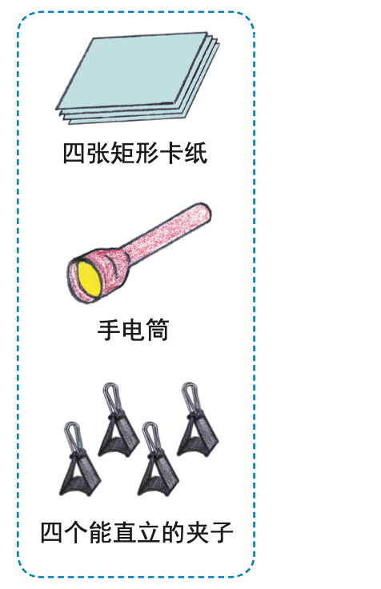
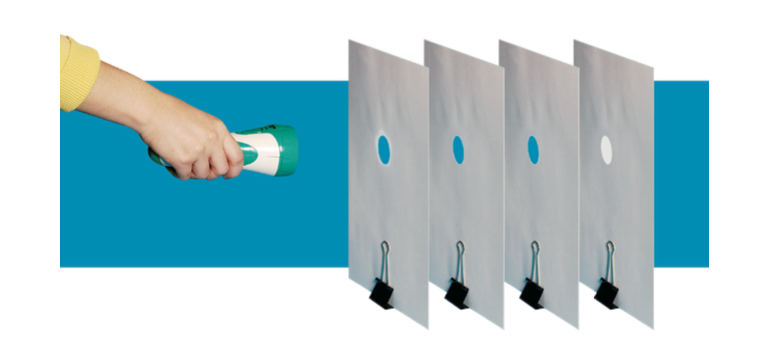
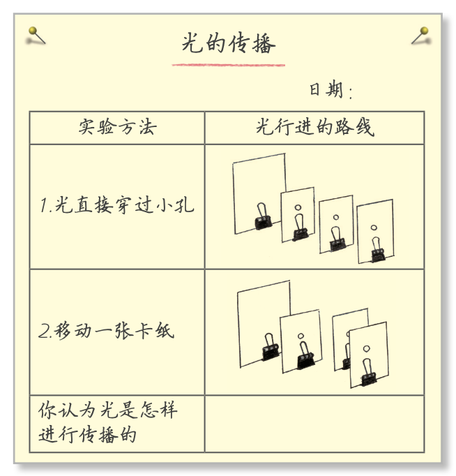

五年级上册课本
目录
光
- 有关光的思考 2
- 光是怎样传播的 5
- 光的传播会遇到阻碍吗 7
- 光的传播方向会发生改变吗 10
- 认识棱镜 12
- 光的反射现象 15
- 制作一个潜望镜 18
地球表面的变化
- 地球的表面 21
- 地球的结构 24
- 地震的成因及作用 26
- 火山喷发的成因及作用 29
- 风的作用 32
- 水的作用 34
- 总结我们的认识 37
计量时间
- 时间在流逝 40
- 用水计量时间 43
- 我们的水钟 45
- 机械摆钟 47
- 摆的快慢 50
- 制作钟摆 52
- 计量时间和我们的生活 54
健康生活
- 我们的身体 58
- 身体的运动 61
- 心脏和血液 64
- 身体的“总指挥” 67
- 身体的“联络员” 69
- 学会管理和控制自己 72
- 制订健康生活计划 74
光
1. 有关光的思考
聚焦
光是从哪里来的?我们对光有哪些了解?
一、光的来源
光主要来自以下几个地方：
- 太阳：太阳是我们最熟悉的光源。它就像一个巨大的火球，不断地发出光和热。太阳内部发生着剧烈的核聚变反应，将氢原子聚变成氦原子，同时释放出巨大的能量，其中一部分以光的形式传播出来。
- 恒星：宇宙中还有很多像太阳一样的恒星，它们也在不断地发光。这些恒星离我们非常遥远，但它们的光可以穿越浩瀚的宇宙空间，被我们的望远镜观测到。
- 人造光源：我们生活中也有很多人造光源，比如电灯、手电筒、蜡烛等。电灯是通过电流通过灯丝，使灯丝发热发光；蜡烛则是通过燃烧产生火焰，发出光和热。
- 生物发光：有些生物也能发光，比如萤火虫、水母等。它们的身体里有一种特殊的物质，能够在特定的条件下发出光来。
二、我们对光的了解
- 光的传播：光是以直线的形式传播的。我们可以通过实验来观察光的传播路径，比如用手电筒照射在墙上，可以看到一条笔直的光线。光在不同的介质中传播速度不同，在真空中传播速度最快，约为每秒 30 万公里。
- 光的反射：当光遇到光滑的表面时，会发生反射。比如我们照镜子时，看到的自己就是光在镜子表面反射形成的。反射角等于入射角，这是光的反射定律。
- 光的折射：当光从一种介质进入另一种介质时，会发生折射。比如我们把一根筷子放在水中，会看到筷子好像折断了一样，这就是光的折射现象。折射角与入射角的关系由两种介质的折射率决定。
- 光的颜色：光有不同的颜色，我们看到的彩虹就是由七种颜色组成的，分别是红、橙、黄、绿、蓝、靛、紫。不同颜色的光波长不同，红光的波长最长，紫光的波长最短。
- 光的能量：光具有能量，我们可以通过太阳能电池板将太阳光的能量转化为电能。光的能量还可以使物体发热，比如我们在太阳下晒太阳会觉得暖和。
- 光的应用：光在我们的生活中有很多应用，比如照明、通信、医疗、摄影等。我们可以利用光的特性来制造各种光学仪器，如望远镜、显微镜、照相机等，帮助我们更好地观察和了解世界。
提示：太阳、激光笔等光源发出的光非常强烈，不能直接用肉眼去看，它们会对我们的眼睛造成伤害。
探索
通常我们把那些自身能发光的物体称为光源。太阳是最重要的光源。图片中发光的物体有什么不同?哪些可称为光源?
光源：太阳光、星光、灯光、萤火虫、烛光、发光鱼、荧光灯
研讨
1. 如果没有光，会发生什么?
如果没有光，会发生很多不可思议的事情呢。
首先，如果没有光，世界将会陷入一片黑暗。我们什么都看不见了，无论是美丽的花朵、高大的树木，还是可爱的小动物，都消失在黑暗中。我们不能看书、不能看电视、不能玩游戏，生活变得非常无趣。
没有光的话，植物也无法生长。因为植物需要光进行光合作用，制造自己需要的养分。如果没有光，植物就不能进行光合作用，它们会慢慢枯萎、死亡。没有了植物，食草动物就没有了食物，它们也会饿死。食草动物没有了，食肉动物也会因为没有食物而无法生存。这样一来，整个生态系统就会崩溃。
而且，如果没有光，地球会变得非常寒冷。太阳光是地球的主要热源之一，没有了太阳光，地球的温度会迅速下降。河流会结冰，大海也会变成巨大的冰块。我们人类和其他动物也会因为寒冷而难以生存。
另外，没有光的话，我们也不能使用太阳能了。太阳能是一种非常清洁、环保的能源，我们可以用它来发电、加热水等。如果没有光，我们就不能利用太阳能，这会给我们的生活带来很大的不便。
总之，如果没有光，世界将会变得非常糟糕。所以，我们要珍惜光，好好利用光，让我们的生活更加美好。
2. 假设你的桌前放着一个红苹果，你的朋友把门关上，并把所有的灯都关 闭，房间里完全黑暗了。房间没有窗，门也没有缝隙，没有光能进入这 个房间。想一想，在黑暗中你能看到这个红苹果吗?
在完全黑暗的房间里，没有任何光能进入，此时无法看到这个红苹果。
我们之所以能够看到物体，是因为物体反射的光进入了我们的眼睛。当没有光照射到红苹果上时，苹果无法反射光，也就无法刺激我们的眼睛产生视觉信号，所以我们不能看到这个红苹果。
拓展
夜视仪可以在“黑暗”的环境 中，将人眼看不见的光转换成电子信 号，让我们看到物体。 
2. 光是怎么传播的？
我们在幕前，能够听到幕后说话人的声音，却看不见说话的人。这是为什么呢?
聚焦
像声音一样，光也有自己的传播方式。与声音的传播相比，光的传播有什么特点?
探索
在三张矩形卡纸的同一位置分别打一个小孔,直径约1厘米;用夹子分别固定卡纸,并直立在桌子上;卡纸之间的间隔约15厘米,保持所有的小孔在一条直线上; 在最后一张卡纸之后约15厘米处,直立一张没有打孔的卡纸作为屏;关闭所有灯光,拉上窗帘,保证手电筒是唯一光源。 |活动手册
 
-
把手电筒放在离你最近的卡纸前,保持一定距离,使手电筒的光能直接穿过这些小孔。观察纸屏并在表格的图中标出光行进的路线。
-
把中间的一张卡纸向左或向右移动大约5厘米,再观察纸屏并在表格的图中标出光行进的路线。 
研讨
1. 纸屏上的光斑在卡纸移动前后有什么变化?你怎样解释这个现象?
一、纸屏上光斑在卡纸移动前后的变化
在卡纸未移动时，纸屏上会出现一个清晰的光斑，这个光斑是由手电筒发出的光依次穿过三个小孔后投射在纸屏上形成的。
当中间的卡纸向左或向右移动大约 5 厘米后，纸屏上的光斑消失。
二、对现象的解释
光在均匀介质中是沿直线传播的。当三张卡纸的小孔在一条直线上时，手电筒发出的光能够依次穿过三个小孔并在纸屏上形成光斑。这是因为光在通过小孔时，其传播路径没有被阻挡，能够顺利地到达纸屏。
而当中间的卡纸移动后，三个小孔不再在一条直线上，光在传播过程中被中间移动后的卡纸阻挡，无法继续沿着原来的路径穿过三个小孔到达纸屏，所以纸屏上的光斑消失。
2. 你能利用光传播的道理,简单解释为什么我们能够听到屏幕后说话人的声音却看不见他本人了吗?与声音的传播相比,光的传播有什么特点?
我们能够听到屏幕后说话人的声音却看不见他本人，是因为声音可以绕过障碍物传播，而光一般沿直线传播。
当说话人在屏幕后时，声音以波的形式向四周传播，遇到屏幕后，部分声音可以通过衍射等方式绕过屏幕传播到我们所在的位置，所以我们能听到声音。而光在通常情况下沿直线传播，当屏幕阻挡了光的传播路径时，光无法绕过屏幕到达我们的眼睛，所以我们看不见屏幕后的人。
与声音的传播相比，光的传播主要有以下特点：
- 光一般沿直线传播，在均匀介质中传播方向不轻易改变，而声音可以绕过障碍物传播。
- 光的传播速度比声音快得多。光在真空中的传播速度约为$3\times10^{8}$米/秒，而声音在空气中的传播速度约为 340 米/秒。